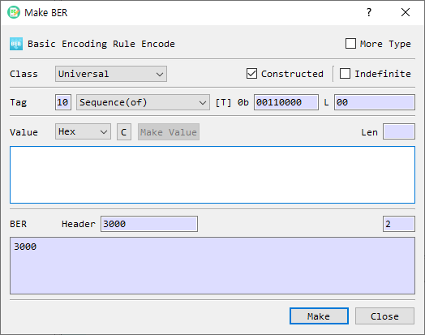

Make BER Dialog Guide
The Make BER dialog builds a BER-encoded value from a tag and value. Open it from Tool > Make BER.

Figure 1. Make BER dialog. The header and BER output are updated as the tag settings and value change.
Screen Areas
- More Type — Adds additional universal tag types to the Tag type list.
- Class — Selects the BER tag class: Universal, Application, Content-Specific, or Private.
- Constructed — Sets the constructed bit. SEQUENCE and SET are always constructed; other universal types cannot be changed to constructed in this dialog.
- Indefinite — Uses indefinite length for constructed data. This option is enabled only when Constructed is selected. The generated BER ends with the end-of-contents marker
00 00. - Tag / Number — For the Universal class, select a tag type from the list. For the other classes, enter the tag number in hexadecimal. The tag number for Content-Specific is limited to
1F(31) or less in this dialog. - Tag bits — Shows the BER tag byte in binary (
[T] 0b). - L — Shows the generated length field in hexadecimal.
- Value format and input — Select the input representation and enter the value. Available formats are Hex, String, and Base64. The Len field shows the decoded value length.
- C — Clears the value input.
- Make Value — Opens a helper for supported value types such as BitString, Integer, or ObjectIdentifier. Availability depends on the selected tag and value format.
- BER Header — Displays the generated tag and length bytes in hexadecimal.
- BER output — Displays the complete BER value in hexadecimal. Its Len field shows the output length.
- Make — Validates and accepts the generated BER value. From Tool > Make BER, the value is then loaded into the main BER view.
- Close — Closes the dialog without accepting the generated value.
Create a BER Value
- Open Tool > Make BER.
- Choose a Class.
- For Universal, choose a tag type. Use More Type if the required universal type is not in the initial list. For another class, enter the tag Number in hexadecimal.
- Set Constructed or Indefinite if applicable. These controls are constrained by the selected tag class and type.
- Select the value format, then enter the value. The BER Header and BER output update as you edit the settings.
- Review the header, length, and complete BER output.
- Select Make to validate and load the result into the main BER view.
Tag and Value Notes
- The default universal tag is SEQUENCE, with Constructed enabled.
- NULL has no value input; the value field is disabled for this tag.
- SEQUENCE and SET require the Constructed bit. Other universal tag types are treated as primitive by this dialog.
- For a constructed value with Indefinite selected, the BER output uses an indefinite length and appends
00 00as the end-of-contents marker. - A BER BOOLEAN value must be exactly one byte.
- For BIT STRING, the first value byte must be between
00and07, representing the number of unused bits. - For non-universal classes, enter the tag number in hexadecimal. The Content-Specific class uses a low tag number up to
1Fhere.
If Validation Fails
If the selected input format cannot be decoded, BerEditor reports a format error and returns focus to the value field. Correct the input format or value, then select Make again. Boolean and BitString values have the additional constraints listed above.